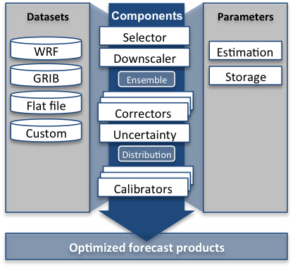

Features
Modular approach
COMPS separates the aspects of post-processing into components, each of which contains
numerous schemes:

End users can combine schemes in different components to produce a custom configuration
tailored to their needs.
Datasets
Interfaces to popular forecast and observation datasets, such as GFS, enables users to
test new methods with real data.
Parameter estimation
Develop new statistical methods
Quality control
COMPS throws out values from datasets that are not within reasonable limits.
Verification
The system can computes verification scores such as mean bias, MAE, CRPS, and ignorance, and allows for new ones to be defined.
Research users
Simplifies proof-of-concept
COMPS allows new schemes to be compared against existing methods.
Case studies
Find the best combinations of schemes
Operational users
Comparisons
Compare schemes and pick the one that suits operational needs
Optimized for speed
COMPS is written in C++, a compiled language offering high-performance.
- Caching options to optimize data retrival from large data sources